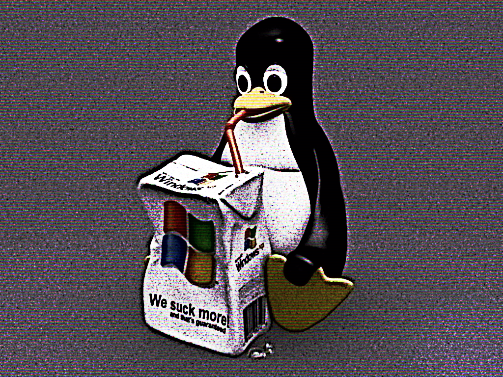
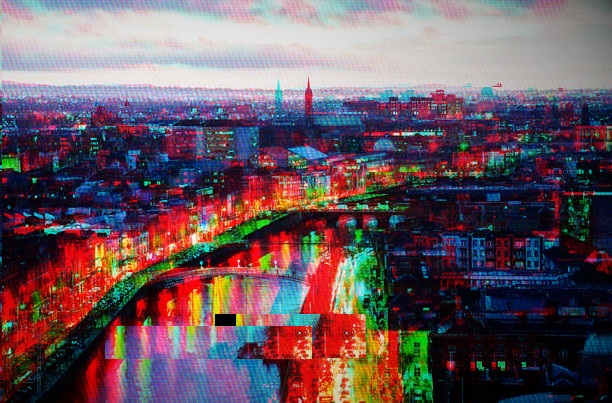

Digital art
On this page is a collection of art I have made over time. There are two categories: profile pictures and wallpapers. Have a look around, and feel free to use all this art without asking-I don't mind!
If you are curious I use Gimp for all of my art.
Profile pictures

Wallpapers
As of right now my favourite wallpaper is the edit of Newyork I have done!
Dublin
Newyork